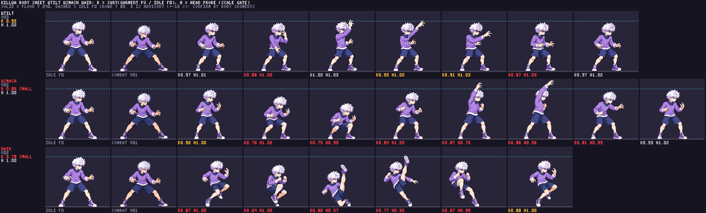

Killua ENG-112 R2: fitted uTilt, uSmash and uair
Review of the current whole-character 48-color atlas. The source drawings remain unchanged; importer sidecars apply measured auto-head fits. User image approvals are recorded separately in art/REVIEW.md. This page presents the packed result and technical evidence for Claude's integration check.
Astra fitted-atlas audit: uTilt v03 and uSmash v02 pass visual scale inspection with no conspicuously small body. uair v02 retains visibly compact body volume; the user explicitly chose to ship its ×0.75 fitted drawing with this note advisory in relay #28. Astra found all inspected limbs connected and every frame inside the cell. Claude's runtime contact check remains.
| Move | Version / fit | Head median | Feet proxy | Body B | Disposition |
|---|
| uTilt | v03 ×0.75 | 1.025 | 1.287 | 0.918 | Astra visual pass; B advisory |
| uSmash | v02 ×0.8613 | 1.013* | 1.215 | 0.853 | Astra visual pass; f4/f5 probe exemptions; B advisory |
| uair | v02 ×0.75 | 0.998* | 1.078 | 0.783 | Ships per relay #28; compact body-volume advisory; f2/f3 probe exemptions |
* Raised limbs occlude the probe in the specified exempt frames. Body B is a pose-sensitive garment-area measure, not a five-segment anatomy certification. See Astra's full audit.
Body-volume comparison

Source strips
uTilt v03 source · uSmash v02 source · uair v02 source